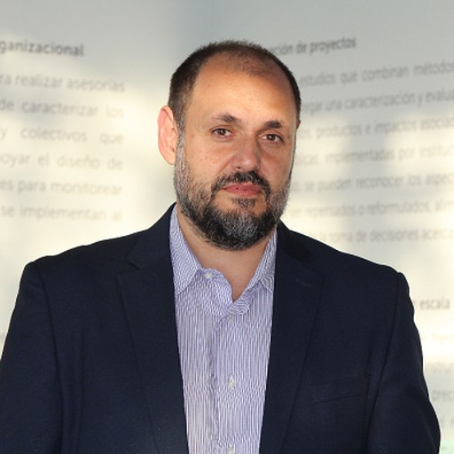
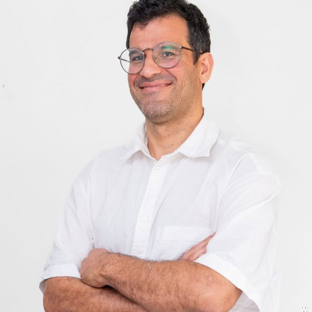
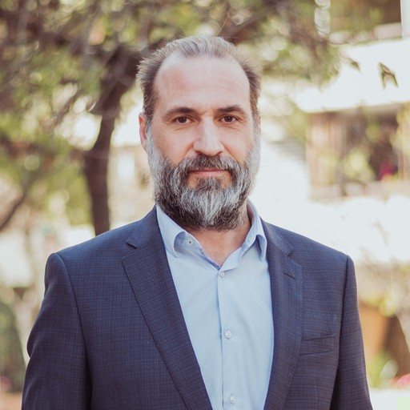

IA PARA TU EMPRESA.
SIN HUMO.
Nosotros la implementamos.
Tú la entiendes.
¿Cachai?
IA construida desde tus procesos, para tu forma de trabajar.
1. Auditoría
Mapeamos tus flujos de trabajo, datos y decisiones para identificar dónde la IA puede crear valor real ahora.
2. Integración
Diseñamos sistemas seguros que conectan modelos, datos y procesos internos sin perder control ni trazabilidad.
3. Operación
Entrenamos a tu equipo, documentamos la lógica y ajustamos los sistemas con usuarios reales para que puedan escalar.
Trabajo en curso.
Inteligencia documental
Convertimos reportes, contratos, bases internas y archivos institucionales en sistemas de consulta, análisis y síntesis.
Para equipos que trabajan con muchos documentos y necesitan encontrar evidencia, comparar casos, generar reportes o mantener trazabilidad.
Podemos construir bases estructuradas, pipelines de extracción, sistemas de búsqueda o agentes que preparan briefs revisables desde documentos complejos.
Ejemplos: documentos de organismos multilaterales, matrices de política pública, contratos, informes internos y archivos de proyecto.
Inteligencia legislativa
Seguimos sesiones, proyectos, actores y riesgos desde fuentes públicas, con briefs auditables y revisión humana.
Para organizaciones que necesitan entender qué está pasando en el Congreso, quién interviene, qué riesgos aparecen y qué evidencia sostiene cada interpretación.
Combinamos fuentes oficiales, video, transcripción, documentos y revisión humana para producir briefs claros, auditables y orientados a decisiones.
Ejemplos: seguimiento de comisiones, proyectos de ley, actores relevantes, riesgos regulatorios y oportunidades de incidencia.
Automatización de conocimiento
Diseñamos flujos donde la IA ayuda a leer, ordenar, sintetizar y dar seguimiento al trabajo sin perder contexto ni trazabilidad.
Para equipos que tienen mucho conocimiento distribuido entre documentos, conversaciones, tareas, correos y decisiones.
Diseñamos sistemas donde los agentes trabajan con contexto compartido, escriben resultados revisables, dejan registros y ayudan a mantener continuidad entre sesiones de trabajo.
Ejemplos: sistemas tipo chief of staff, bandejas de entrada inteligentes, memoria de proyectos y coordinación de tareas.
Simulación y escucha pública
Modelamos entornos públicos, señales ciudadanas y escenarios de decisión para entender cómo se mueven actores, demandas y riesgos.
Para equipos que necesitan leer ambientes complejos antes de decidir: territorios, comunidades, audiencias, clientes, usuarios o stakeholders.
Combinamos datos, investigación cualitativa, escucha pública y simulación para construir mapas de actores, escenarios y sistemas de apoyo a la decisión.
Ejemplos: gemelos digitales organizacionales o territoriales, monitoreo de opinión pública, análisis de stakeholders y simulación de respuestas ante políticas o productos.
Capacitación aplicada
Entrenamos equipos para pasar del uso individual de chatbots a sistemas de trabajo con IA, criterio y control.
Para organizaciones que quieren que sus equipos usen IA de forma práctica, segura y conectada con el trabajo real.
La capacitación combina principios, práctica guiada y construcción de flujos propios: cómo trabajar con herramientas agénticas, cómo organizar contexto, cómo revisar outputs y cómo convertir tareas repetidas en sistemas.
Ejemplos: talleres ejecutivos, bootcamps de agentes, formación de equipos técnicos y acompañamiento a líderes internos.
Quiénes somos
CachAI Labs reúne investigación, consultoría, política pública y desarrollo de sistemas.
El equipo en formación combina experiencia académica, tecnológica, pública y organizacional.
Juan Pablo Luna

Diamond Brown Chair in Democratic Studies en McGill University y Profesor Titular Visitante en la Escuela de Gobierno UC. Su trabajo sobre política latinoamericana, Estado, democracia y organizaciones criminales aporta una lectura estratégica del entorno donde las instituciones toman decisiones y enfrentan riesgo.
Ver perfil ↗Mitchell Bosley
Investigador postdoctoral en CENIA y computational social scientist. Diseña sistemas de inteligencia documental y flujos de trabajo con agentes para transformar reportes, bases, entrevistas y trazas de proceso en análisis revisable y usable por equipos.
Ver perfil ↗Naím Bro

Assistant Professor en la Escuela de Gobierno de la Universidad Adolfo Ibáñez e investigador del Instituto Milenio Fundamentos de los Datos. Su trabajo en elites, estratificación y ciencia social computacional aporta herramientas para medir relaciones sociales y políticas desde datos complejos.
Ver perfil ↗Andrés Abeliuk
Assistant Professor en el Departamento de Ciencias de la Computación de la Universidad de Chile e investigador asociado a CENIA. Trabaja en IA, sistemas sociales y modelamiento del comportamiento, conectando investigación técnica con problemas de coordinación, evaluación y diseño de sistemas.
Ver perfil ↗Sergio Toro
Profesor Titular en Universidad Mayor. Su investigación y experiencia en partidos, representación, instituciones y opinión pública ayudan a traducir señales políticas dispersas en diagnósticos útiles para organizaciones que operan en entornos públicos.
Ver perfil ↗Rafael Palacios

Vicepresidente Ejecutivo de ACADES y director de Pivotes y de la Sociedad Chilena de Políticas Públicas. Combina formación en derecho, antropología y negocios con experiencia en gremios, regulación, opinión pública y estrategia institucional.
Ver perfil ↗¿LISTO PARA EMPEZAR?
Cuéntanos cómo trabaja tu organización.
Veamos dónde la IA puede aportar valor.